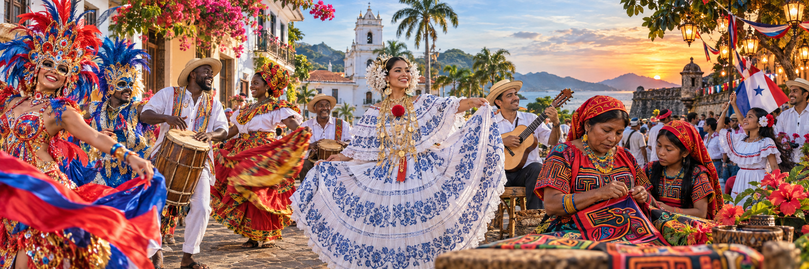

JanuaryLas Tablas, Los Santos
Thousand Polleras Parade
A national showcase of polleras, music, regional dress and the artisan work behind Panama's best-known traditional garment.
Check ATP information
Filter annual highlights by month and interest, then verify the official schedule before making travel plans.
This calendar is a planning guide, not a ticketing schedule. Variable dates are marked clearly and must be checked with the official organizer.
A national showcase of polleras, music, regional dress and the artisan work behind Panama's best-known traditional garment.
Check ATP informationPublic celebrations feature queens, floats, music, dance and strong regional identities. Las Tablas is one of the best-known settings.
Read the official regional guideTheatre, music, dances, colorful masks and processions combine Catholic devotion with popular practices across Panamanian communities.
Read the UNESCO recordDelegations bring together distinctive masks, costumes and dances in a public celebration of one of Panama's most striking cultural expressions.
Check current eventsMusic, dance, traditional competitions, artisans and local cuisine celebrate Panamanian folklore and the legacy of the festival's founders.
Check Ministry of Culture updatesA celebration of hat-making knowledge, regional identity and the plant-fiber techniques associated with Panama's sombrero pintao.
Check Ministry of Culture updatesNo cultural highlights match both filters. Try another month or interest.
Public events may change dates, routes, capacity or visitor guidance. Use the official listings below before booking transport or accommodation.